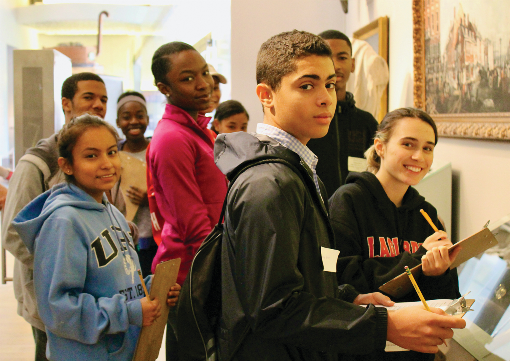
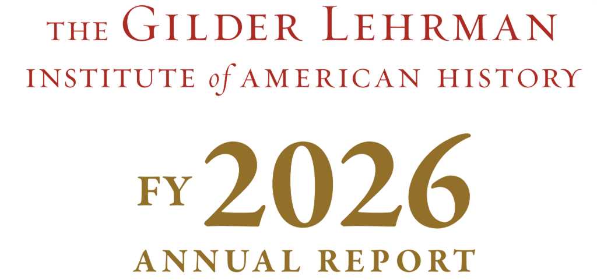
FY2026 Gilder Lehrman Institute (GLI) Highlights
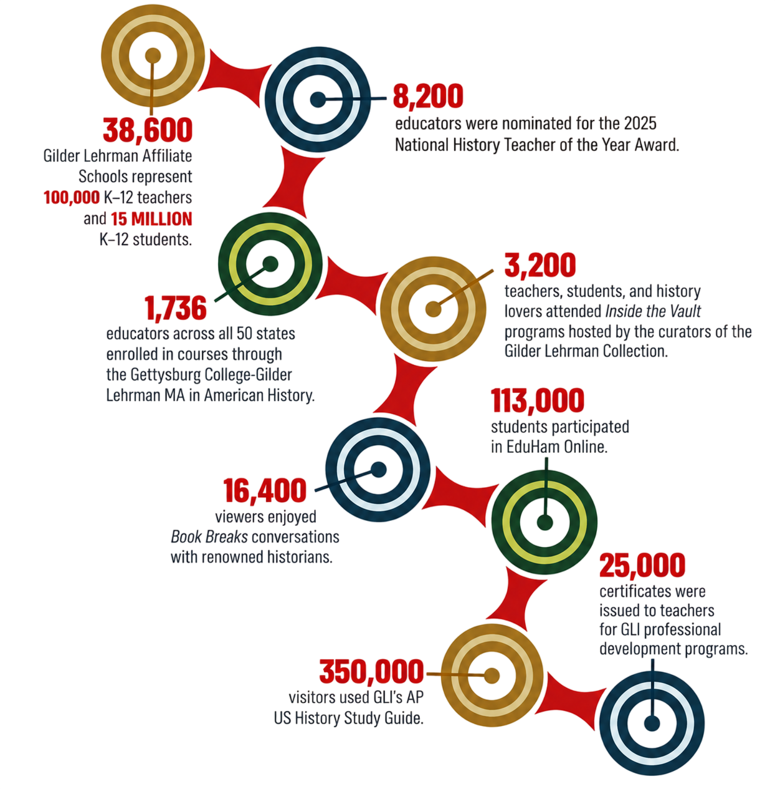
Our Mission
Studying American history deepens our
understanding of who we are as a nation and
our roles as individuals. It allows us to see
how principles like liberty, equality, and justice
have evolved—and how they continue to be
tested and redefined. Understanding the
ideals and events that shaped our nation,
especially during the founding era, offers
context, insight, and a foundation for
meaningful conversation.
The Institute is the leading nonprofit and
nonpartisan organization dedicated to
improving the teaching and learning of
American history through educational
programs and resources. We serve K–12
teachers and students, honor scholars, and
welcome and inform the general public.
Knowing our shared story is essential for our
future. By deepening our understanding of
the founding era and the broader American
narrative, we fortify the pillars of civic society
and foster critical thinking for a lifetime.
This year, we rededicated ourselves to this
mission by supporting educators, inspiring
students, and bringing communities together
to explore America’s past. This report shares
the programs, partnerships, and results that
brought history into classrooms across the
country
Milestones in FY2026
Declaration at 250 Resource Hub Completed
Undergraduate Advisory Council Launched
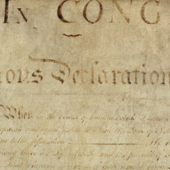
NYC Students Discussed the Revolution with Ken Burns and Lin-Manuel Miranda
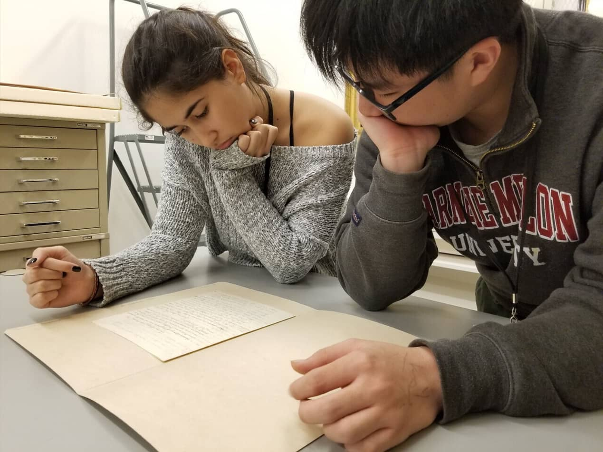
A NOTE ON OUR REPORTING YEAR: Beginning with this report, the Gilder Lehrman Institute has transitioned from calendar-year to fiscal-year reporting. The figures and highlights that follow reflect our FY26 fiscal year (July–June) rather than a calendar year.
LETTER FROM
Jim Basker, President and CEO
This past year, the Gilder Lehrman Institute continued to ask a question that has guided our work since our founding: How can we help teachers give students the historical knowledge and perspective they need to be thoughtful citizens of a democracy?
As we celebrate this year the 250th anniversary of the Declaration of Independence, we have expanded our offerings across every channel, including new online resources and curricula, immersive exhibitions, and programs for educators. Our panel exhibition Declaration 1776: The Big Bang of Modern Democracy traces the far-reaching effects of the Declaration’s ideals across the centuries and around the world, from the birth of the Civil Rights Movement in the 1770s to the 19th-century revolutions across Latin America to the breakup of the Soviet Union at the end of the 20th century. Together, these resources reflect our belief that the founding era is not a historical curiosity—it is essential to what teachers cover in their classrooms every single year.
But the scale of our challenge is immense. Each year, four million students graduate from high school and become our fellow citizens eligible to vote and fully participate in our democracy. In a time of deep divisiveness and apathy, we believe that historical perspective offers more than context. It offers hope. Lincoln, standing in the Gettysburg cemetery with no certainty that the Union would survive, turned to the Declaration and prophesied a “new birth of freedom.” In that spirit, historical perspective can help us place our own moment in the arc of our nation’s ongoing pursuit of “a more perfect union.”
Lewis Lehrman and Richard Gilder helped build this Institute around the conviction that American history is the foundation of citizenship itself. We are committed to carrying that vision forward with the same devotion and care they brought to this work from the beginning.
We are grateful to our Board of Trustees, our donors, and our partners for enabling this essential work. Join us in equipping the millions of young Americans who will shape our democracy’s future with the tools they need to keep our country thriving.
Jim Basker
President and CEO
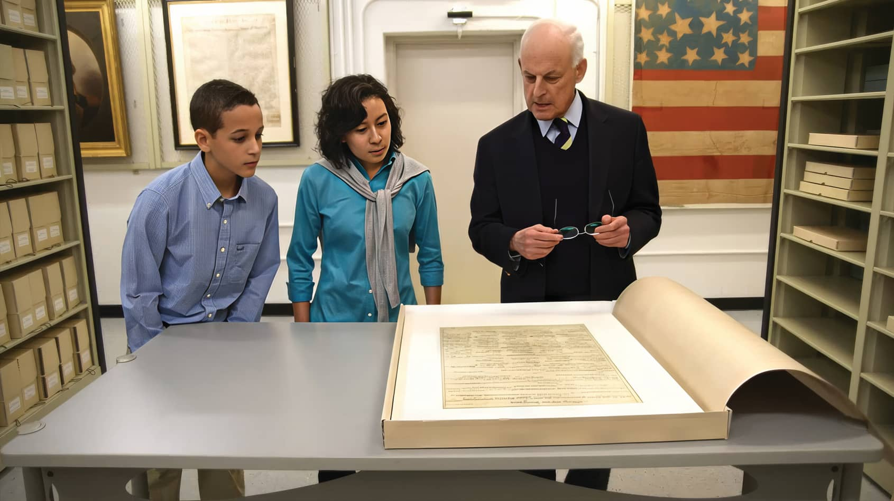
IN MEMORIAM:
Lewis E. Lehrman (1938–2026)
The Gilder Lehrman Institute lost its co-founder, co-chairman, and guiding spirit this year. Lewis Lehrman shaped nearly every part of the work this report includes: the Collection, the prizes, the seminars, the partnerships, and the Affiliate School network of nearly 40,000 schools. None of it would exist without him.
Lew was a Renaissance man. A businessman who built Rite Aid into one of the largest pharmacy chains in the country. An economist who advised presidents and testified before Congress. A candidate who came within three points of the governorship of New York. A scholar who wrote books on Lincoln, on Churchill, on the gold standard, and on the American founders.
But the work he was proudest of, and the work for which he will be remembered longest, was the work of a teacher. He believed that American history—taught honestly, taught from the documents, taught to every student in every kind of school—was the foundation of citizenship itself.
With his longtime friend and partner Richard Gilder, Lew built an institute around that conviction. He showed up for it, year after year, decade after decade. He delighted in the company of students. He paid attention to young people in ways large and small, often through quiet gestures that only the recipients knew about.
We carry Lew’s work forward with gratitude and with the knowledge that the best tribute we can offer him is the one he would have asked for: continue the mission and don’t give up.
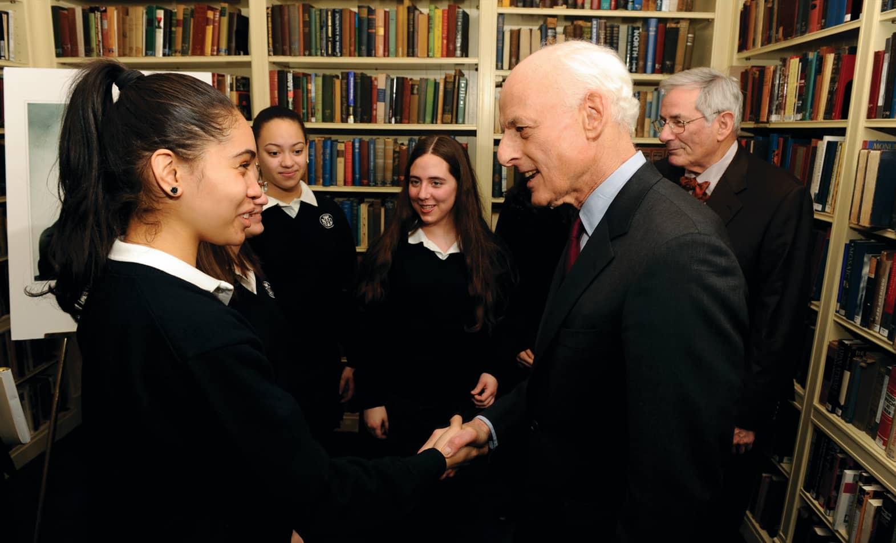
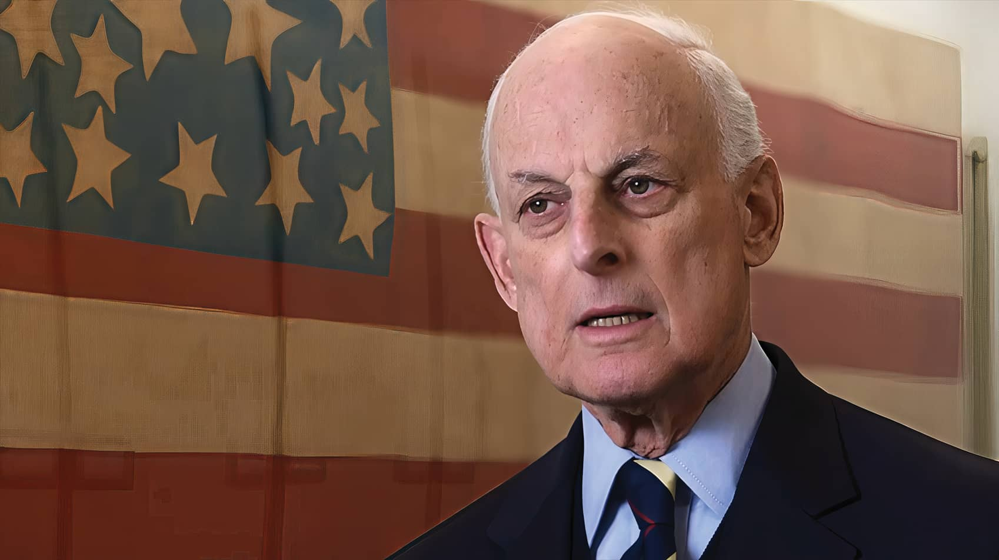
A Focus on Students
AFFILIATE SCHOOL PROGRAM
The Gilder Lehrman Institute’s Affiliate School Program has grown into a network of 38,600 K–12 schools, representing more than 100,000 teachers and 15 million students nationwide. Since 2009, the program has provided free resources, events, and tools designed to bring American history to life in classrooms of all sizes and settings. Growth continues each year, with more than 1,700 schools joining in FY2026 alone.
The Affiliate School Program serves as a one-stop hub for educators, offering professional development, access to leading scholars, student opportunities, and both in-person and online experiences.
Teachers also receive free classroom-ready materials—such as posters, calendars, and resource guides—which were requested more than 58,000 times this year.
Popular offerings this year include our 2026 Gilder Lehrman Calendar, a set of posters showcasing propaganda images of Boston during the Revolutionary period, and a timeline covering the colonial to Revolutionary eras.
| Tuscaloosa Public Schools (AL) | Metro Nashville Public Schools (TN) |
| Palm Beach County Schools (FL) | Sevier County Schools (TN) |
| Portland Public Schools (OR) | Prince William County Schools (VA) |
OUR GROWING NETWORK OF AFFILIATE SCHOOLS
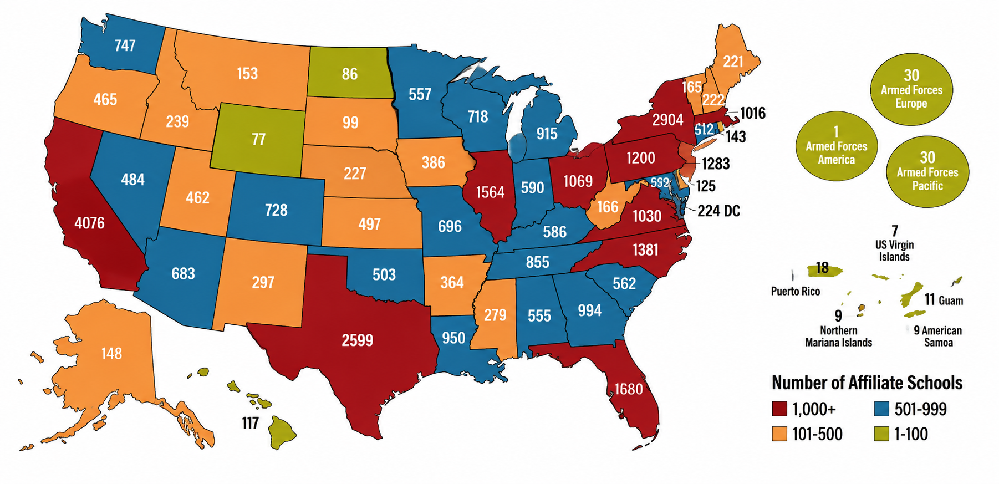
History U
History U gives high school students free, self-paced access to American history courses drawn from our renowned MA in American History program. Designed for independent learning, the courses have already engaged more than 7,600 students in all 50 states and 15 countries.
History School Book Club
The History School Book Club expanded significantly following last year’s pilot, engaging hundreds of high school students nationwide. The program now features a growing library of units drawn from our popular weekly Book Breaks series, focusing on themes that connect directly to high school history education and resonate with student interests. Our pilot year began with a collection of books that cover African American history.
This year, the program expanded to include books focused on the founding era, and Lincoln and the Civil War.
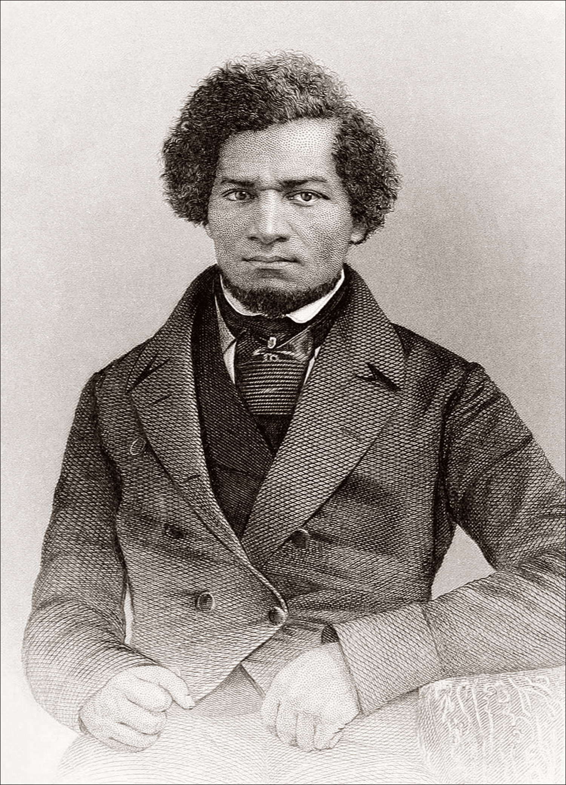
Abolitionist, orator, and writer Frederick Douglass (The Gilder Lehrman Institute, GLC05820)History School Book Club Featured Books
- FOUNDING ERA
- Akhil Reed Amar —The Words That Made Us: America’s Constitutional Conversation: 1760–1840
- Ana Lucia Araujo —Humans in Shackles: An Atlantic History of Slavery
- Rick Atkinson —The British Are Coming: The War for America, Lexington to Princeton, 1775–1777
- Brooke Barbier —King Hancock: The Radical Influence of a Moderate Founding Father
- James G. Basker —Black Writers of the Founding Era
- T. H. Breen —The Will of the People: The Revolutionary Birth of America
- Lindsay M. Chervinsky —Making the Presidency: John Adams and the Precedents That Forged the Republic
- Joseph J. Ellis —The Cause: The American Revolution and Its Discontents, 1773–1783
- Glory Liu —Adam Smith’s America: How a Scottish Philosopher Became an Icon of American Capitalism
- Stacy Schiff —The Revolutionary: Samuel Adams
- LINCOLN AND THE CIVIL WAR
- John Avlon —Lincoln and the Fight for Peace
- Eric Foner —The Second Founding: How the Civil War and Reconstruction Made the Constitution
- Gary Gallagher —The Enduring Civil War: Reflections on the Great American Crisis
- Allen C. Guelzo —Our Ancient Faith: Lincoln, Democracy, and the American Experiment
- Harold Holzer —Brought Forth on This Continent: Abraham Lincoln and American Immigration
- Caroline Janney —Ends of War: The Unfinished Fight of Lee’s Army after Appomattox
- Jon Meacham —And There Was Light: Abraham Lincoln and the American Struggle
- Lucas Morel —Lincoln and the American Founding
- Elizabeth Varon —Armies of Deliverance: A New History of the Civil War
- Jonathan W. White —A Great and Good Man: Rare Firsthand Accounts of Abraham Lincoln
With this momentum, the Book Club is quickly becoming a trusted and enjoyable way for students to deepen their understanding of American history beyond the classroom.
By exploring American history, students gain insight into the issues that shape their communities today. Our student programs make these connections tangible, offering engaging resources and opportunities that spark curiosity, build knowledge, and cultivate critical thinking skills. Our goal is simple yet powerful: to make history education free, inspiring, and accessible to learners everywhere.
AP STUDY GUIDES
Launched in spring 2025, our AP African American Studies Guide is a free resource that provides students with easy-to-use content exploring the full range of African American history. Linking important themes, primary sources, and key research, the guide helps students acquire the knowledge and context they need to excel on the AP exam and beyond.
Schools across the country have adopted the guide, and educators in the field have recognized its high quality. The guide features more than 500 resources from GLI and other archives, including images and historical documents, scholarly essays, videos from Professor Henry Louis Gates Jr.’s Black History in Two Minutes series, and learning resources from Professor Edward L. Ayers’s Teaching American History/Bunk digital history project.
The guide received more than 18,000 views from nearly 7,500 users in the first month after its launch. The goal was to reach 50,000 users by May 2026 and to sustain annual growth thereafter. More than 300,000 users visited the guide from May 2025 to May 2026.
St. Louis Park, MN
Our AP US History Study Guide provides students with a clear and comprehensive understanding of America’s past. It focuses on key ideas and includes essential documents, helping students build the knowledge and thinking skills they need for the exam and for active citizenship. Last year, the guide received a fresh new look, though still rigorously organized around the nine historical periods covered in the APUSH exam.
This year, we further enhanced the guide’s usefulness by adding practice questions based on real exam content. The guide has had more than one million views since its launch.
Building on the success of the AP African American Studies guide, GLI is developing a freely accessible study guide for AP US Government and Politics. The guide will connect required foundational documents and Supreme Court cases to primary sources from the Gilder Lehrman Collection, supporting both content mastery and historical thinking skills. We plan to launch a provisional version of the guide in April 2027, ahead of a full launch on Constitution Day 2027
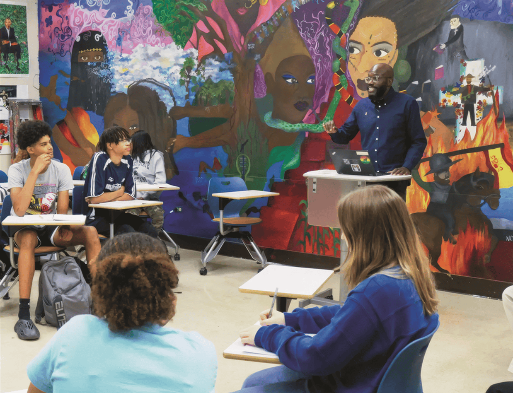
THE CITIZENSHIP TEST: Civics and American History
The Gilder Lehrman Institute developed a student-friendly version of
the US naturalization exam for K–12 learners. With customized versions
for elementary, middle, and high school students, the test offers score
reports and explanations in an engaging format. Since the program has
launched, the Citizenship Program webpage has been viewed more than
2,897,000 times by students, teachers, and the general public.
These resources also provide valuable support for teachers in states
where passing the US citizenship test is a requirement for high school
graduation. More broadly, they help students develop a deeper
understanding of civics—laying the foundation for the next generation
of informed and engaged citizens.
To extend this impact, we partnered with Kahoot! to create interactive
civics lessons. These games offer another accessible way to explore
American history and government. More than 713,000 tests have been
taken on the Citizenship Program webpage, and more than 170,000 tests
have been taken through Kahoot!
In addition to the online resources, we hosted the Building Better Citizens
Online Summit in September 2025, which brought together 160 educators
from 37 states to share strategies for strengthening civics and history
education. Survey results underscored its impact: 98% of respondents
stated that the summit was a good use of their time, and 94% reported
that they would increase their use of Gilder Lehrman resources as
a result. Teachers described the experience as “encouraging and
inspiring,” “nonpartisan,” and “empowering”—especially for those working
in small or rural schools.
We also celebrated the winners of the first Building Better Citizens:
An Innovative Curriculum Contest. First place was awarded to Colin
Richardson, a public high school teacher from North Carolina. Additional
prize-winning educators from Arizona, California, Kansas, Louisiana,
Maryland, New York, and Washington, DC, created lesson plans for grades
3–12, now available as a resource for teachers nationwide.
Students were also invited to participate in the 2026 Citizenship
Challenge: Redesigning America’s Citizenship Test, which asked them
to propose new questions for the naturalization exam through essays,
podcasts, or videos. From more than 650 submissions, 10 winners (five
from grades 3 to 8 and five from grades 9 to 12) were selected, each
receiving a $500 award.
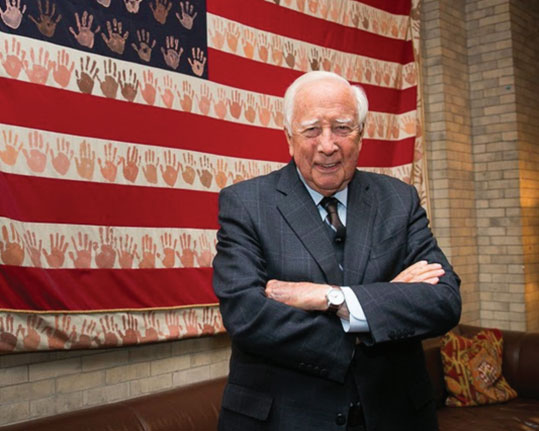
David McCullough (1933–2022), Pulitzer Prize–winning historian and Gilder Lehrman Life TrusteeDAVID MCCULLOUGH ESSAY PRIZES
We proudly recognized 14 winners of the David McCullough Essay Prizes, honoring outstanding historical research and interpretation by high school students at Gilder Lehrman Affiliate Schools.
• 1st Prize: $5,000 (plus a $500 prize awarded to the school)
• 2nd Prize: $1,500 (plus a $500 prize awarded to the school)
• Five 3rd Prizes: $500 each
Named for Gilder Lehrman Life Trustee and Pulitzer Prize–winning historian David McCullough, the prizes celebrate young writers who demonstrate historical rigor, clarity of style, strong use of evidence, and the empathy and imagination that bring the past to life. This year’s competition drew exceptional submissions from across the country and abroad, reflecting the extraordinary talent and commitment of our Affiliate School students. We received 753 student submissions from 36 US states, Washington, DC, Bangladesh, Canada, China, India, Kazakhstan, Korea, Myanmar, Pakistan, Taiwan, Thailand, Turkey, and the United Kingdom.
The winning students exemplify the very best of high school historical scholarship. We extend our warmest congratulations to this year’s winners and participants and look forward to continuing this tradition of excellence in historical writing
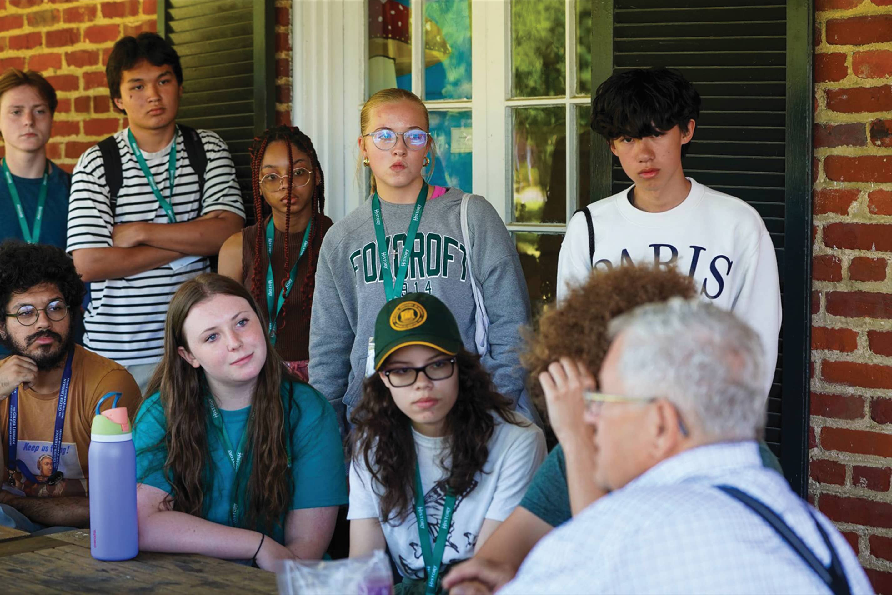
Students at the National History Academy summer program in VirginiaNATIONAL HISTORY ACADEMY SCHOLARSHIPS
The National History Academy is a four-week residential summer program in Middleburg, Virginia, that immerses rising 10th–12th grade students in the study of American history. Once again this year, the Gilder Lehrman Institute partnered with the Academy to make this experience accessible to students in our Affiliate School Program by awarding 20 full scholarships.
These scholarships covered room, board, learning materials, transportation, and admission to historic sites, ensuring that talented students from diverse backgrounds could participate fully in this unique opportunity to engage with history where it happened.
STUDENT ADVISORY COUNCIL
Founded in 2014, the Student Advisory Council (SAC) continues to offer high school students in grades 8–12 a distinctive platform to explore American history, while developing their leadership, communication, and critical thinking skills. Today, the SAC brings together more than 200 students from all 50 states and around the world, with alumni advancing to some of the nation’s top universities.
Students on our council meet one Saturday a month online to provide feedback on our programs and resources, explore documents in the Gilder Lehrman Collection, learn from historians about their work, and hear from other members. Their participation not only enhances the Institute’s offerings but also fosters a deeper appreciation for history and civic engagement among their peers.
Participation in the SAC empowers students to connect with like-minded peers across the country, build a strong academic and leadership profile, and make a lasting impact on the Institute’s mission of bringing history to life for learners everywhere.
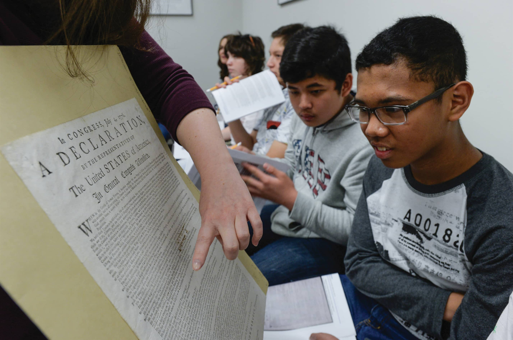
Students from a Gilder Lehrman Affiliate School view items from the Gilder Lehrman Collection.10 Years of the Hamilton Education Program
Since 2015, the Hamilton Education Program (EduHam) has transformed
the way students engage with American history. In partnership with
The Rockefeller Foundation and the producers of HAMILTON, the Gilder
Lehrman Institute launched EduHam to provide Title I-eligible schools
with unparalleled access to both the hit Broadway show and a curriculum
that connects the founding era to their own lives
in a Q&A session with HAMILTON cast and creative team members.
EduHam Online participation expanded by 94,000 students, with creative
submissions to the competition and lottery increasing by 60 percent.
From rap battles about the Federalists and Anti-Federalists to heartfelt
monologues by middle schoolers, student performances reflect the
enduring power of history told in their own voices.
Over the past decade, more than 210,000 students from New York City, Los Angeles, Chicago, and 22 other cities have attended HAMILTON through EduHam. More than 15,500 teachers and one million students nationwide have participated in EduHam Online, which extends the program’s reach far beyond the theater. For many students, HAMILTON was their first professional theater experience—an event they described as “life-changing” and sparked new interest in history, theater, and civic engagement.
Over the past decade, more than 210,000 students from New York City, Los Angeles, Chicago, and 22 other cities have attended HAMILTON through EduHam. More than 15,500 teachers and one million students nationwide have participated in EduHam Online, which extends the program’s reach far beyond the theater. For many students, HAMILTON was their first professional theater experience—an event they described as “life-changing” and sparked new interest in history, theater, and civic engagement.
This year, the program continued its tradition of excellence. Nearly 7,000 New York City students attended matinees at the Richard Rodgers Theatre, along with 2,000 students in Los Angeles. Additionally, HAMILTON reached 2,500 students in rural communities who had the opportunity to participate
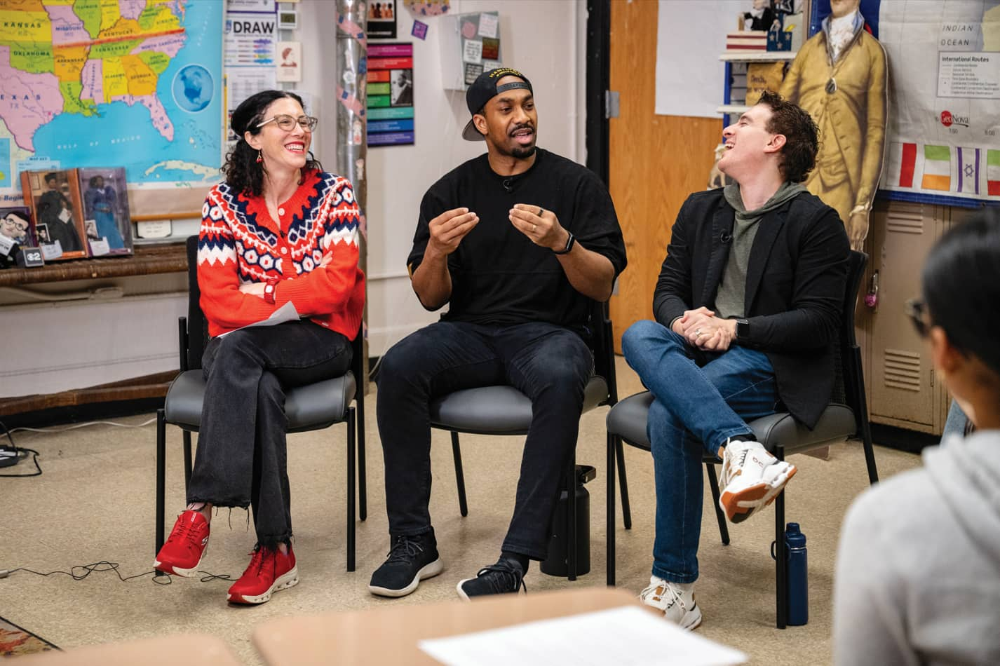
As EduHam celebrates its 10th anniversary, we honor the vision that made it possible and the millions of young people whose lives it has already touched. With continued support, the Hamilton Education Program will carry its unifying, hopeful, and inclusive message to the next generation—helping students rise to write their own chapter in America’s great unfinished story.
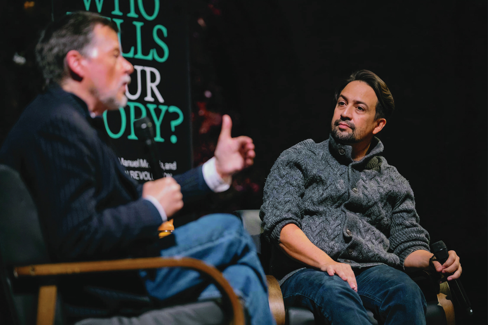
MARKING AMERICA’S 250TH:
Burns and Miranda Bring the Revolution to NYC Students
In November 2025, the Gilder Lehrman Institute brought more than 400 New York City public school students from 11 schools to the historic Trinity Church for “Who Tells Your Story?”—a special EduHam event marking the lead-up to the nation’s 250th anniversary.
Every student in attendance had already engaged with the EduHam curriculum, arriving with a working knowledge of the Founding Era that set the stage for a conversation about the American Revolution and the importance of active citizenship to a healthy democracy, led by documentarian Ken Burns and HAMILTON creator Lin-Manuel Miranda.
Burns previewed a clip from his then-forthcoming PBS documentary The American Revolution, and students performed original pieces based on the EduHam curriculum and asked questions of both presenters
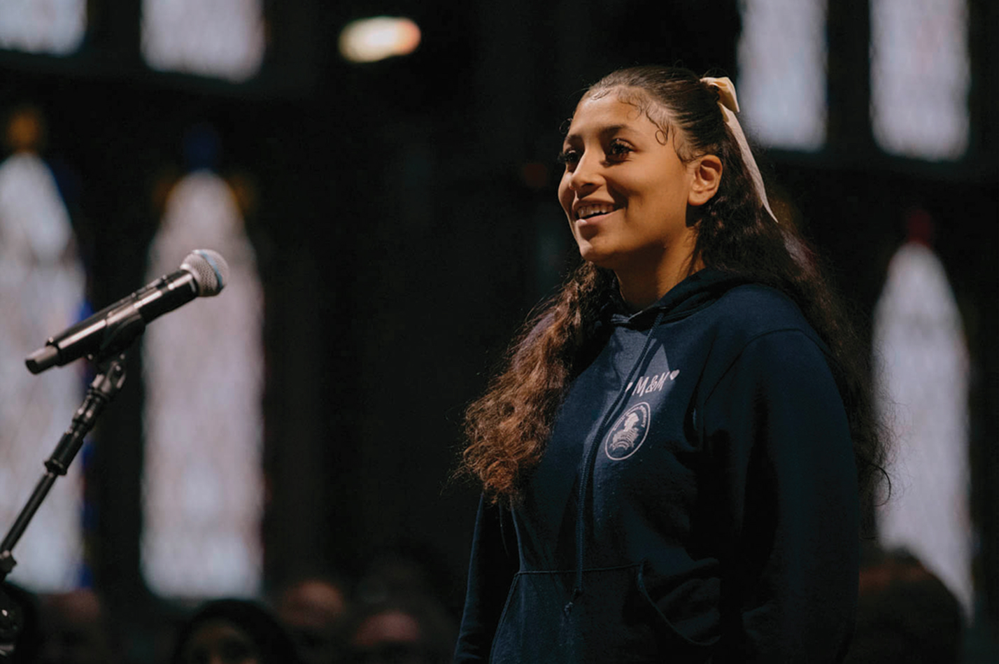
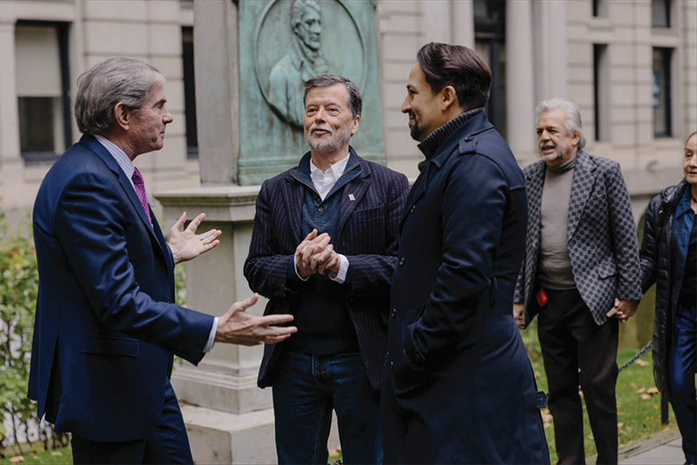
National History Teacher of the Year
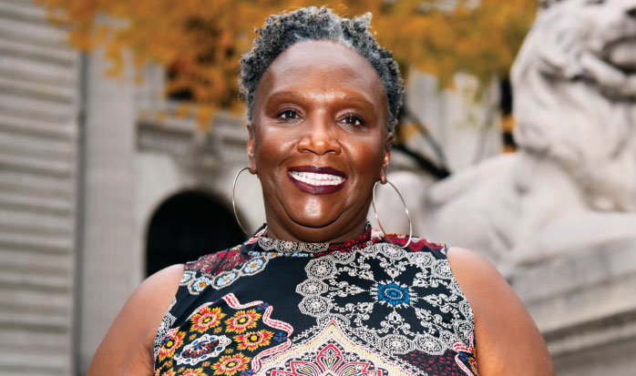
Valencia Abbott, the 2025 National History Teacher of the YearIn 2025, the Gilder Lehrman Institute of American History honored Valencia Abbott, an educator at Rockingham Early College High School in Wentworth, North Carolina, as the National History Teacher of the Year.
Abbott, who has more than two decades of teaching experience, serves as the Social Studies Department chair and teaches civics at Rockingham Early College. She holds a BA in Political Science–Pre Law, an MA in Liberal Studies, and a Post-Baccalaureate Certificate in African American Studies from UNC Greensboro, as well as Add-On Licensure in Academically/Intellectually Gifted Education from Duke University.
Nominated by a student, Abbott has a deep commitment to students. She has earned numerous distinctions, including the 2024 Civil Rights/ Civil Liberties Excellence in Teaching Award, the 2024–2025 RECHS Teacher of the Year honor, and selection as a 2024 United States Holocaust Memorial Museum Teacher Fellow.
Abbott received a $10,000 award at a special ceremony on November 5, 2025, at the Harvard Club of New York City, presented by Pulitzer Prize– winner Stacy Schiff.
Now in its twenty-second year, the National History Teacher of the Year Award celebrates the essential role of teachers by honoring outstanding K–12 educators from every state, the District of Columbia, Department of Defense schools, and US territories. From more than 8,200 nominations nationwide, state winners were selected by committees of teachers and education professionals.
A panel of distinguished historians, past awardees, and master teachers then chose one national winner, recognizing excellence in both classroom teaching and inspiring students to be active, knowledgeable citizens
2025 National History
Teacher of the Year
Now in its twenty-second year, the National History Teacher of the Year Award celebrates the essential role of teachers by honoring outstanding K–12 educators.
-
2025 State History Teachers of the Year
We’ve received over 9,500 nominations for the 2026 National History Teacher of the Year.
- Alabama
Malinda Nichols -
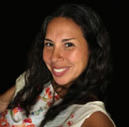
Alaska
Lynda Leal Prince -
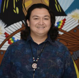
Arizona
Jeron Velasco -
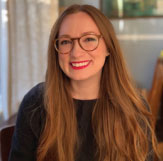
Arkansas
Elizabeth Prewet - Armed Forces Europe
Nadine Davis - California
Marsha Greco - Colorado
Lisa Moot -
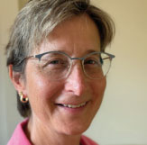
Connecticut
Nora Mocarski - Delaware
Daniel Mahler - DIstrict of Columbia
Kyra Zemanick - Florida
John Walsh -
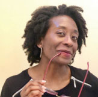
Georgia
Tania Davis -
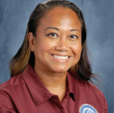
Hawaii
Michelle Levine - Idaho
Melissa Webster - Illinois
Nikoletta Antonakos - Indiana
Shelby Hall - Iowa
Jessica Dowell - Kansas
Shawn Hornung - Kentucky
Amanda Smith - Louisiana
Rex Randall Jones, Jr -
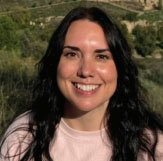
Maine
Sarah Campbell - Maryland
James Baker - Massachusetts
Jenny Staysniak - Michigan
Marie Sarnacki - Michigan
Gracia Elrick Cooper - Mississippi
Kreissa Reed - Missouri
Brian Esselman - Montana
Jeffrey Stanek - Nebraska
James Hulstein -
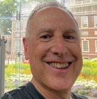
Nevada
Mitchell Kalin -
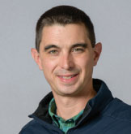
New Hampshire
Jonathan Browher - New Jersey
Robert Schulte -
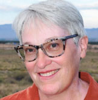
New Mexico
Kathryn (Katy) Hammel - New York
Prince Johnson -
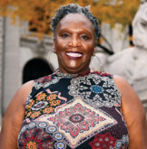
North Carolina
Valencia Abbot -
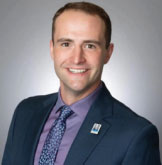
North Dakota
Landen Schmeichel -
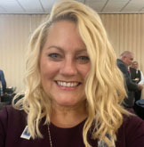
Ohio
Kimberly Huffman - Oklahoma
Jennifer Huf - Oregon
Rebecca Eisenberg - Pennsylvania
Kenneth Kubistek - Rhode Island
Christina O’Brien - South Carolina
Robert DeCerbo - South Dakota
Nancy L. Deranleau - Tennessee
Dusty Helton - Texas
Caitlin Baumgarten - US Territories
Elisaia Ma’ilo - Utah
Christina Jacobs - Vermont
Tara Martin - Virginia
Lewis Longenecker - Washington
Heather Miller -
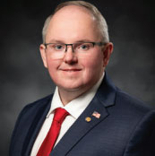
West Virginia
William Bell - Wisconsin
Alisha Neinfeldt - Wyoming
Cheryl Katz
Gettysburg College–Gilder Lehrman MA in American History
The Gettysburg College–Gilder Lehrman MA in American History is a fully accredited, thirty-credit master’s degree program offered entirely online. Designed primarily for K–12 teachers, who comprise nearly 90% of the student population, the program also attracts museum professionals, community college instructors, staff from the National Park Service, and aspiring teachers. With its blend of rigorous scholarship and flexible online format, it’s an accessible way for educators to invest in themselves and their careers.
- New Courses in FY2026
- American Intellectual History, Pt. I
with Prof. Caroline Winterer, Stanford University - American Intellectual History, Pt. II
with Prof. Jennifer Ratner-Rosenhagen, University of Wisconsin-Madison - The History of Capital, Labor, and Democracy,
1877 to Present
with Prof. Jefferson Cowie, Vanderbilt University - Twentieth-Century American Business History
with David Sicilia, University of Maryland - Voting and Elections in American History
with Prof. Michael Kazin, Georgetown University
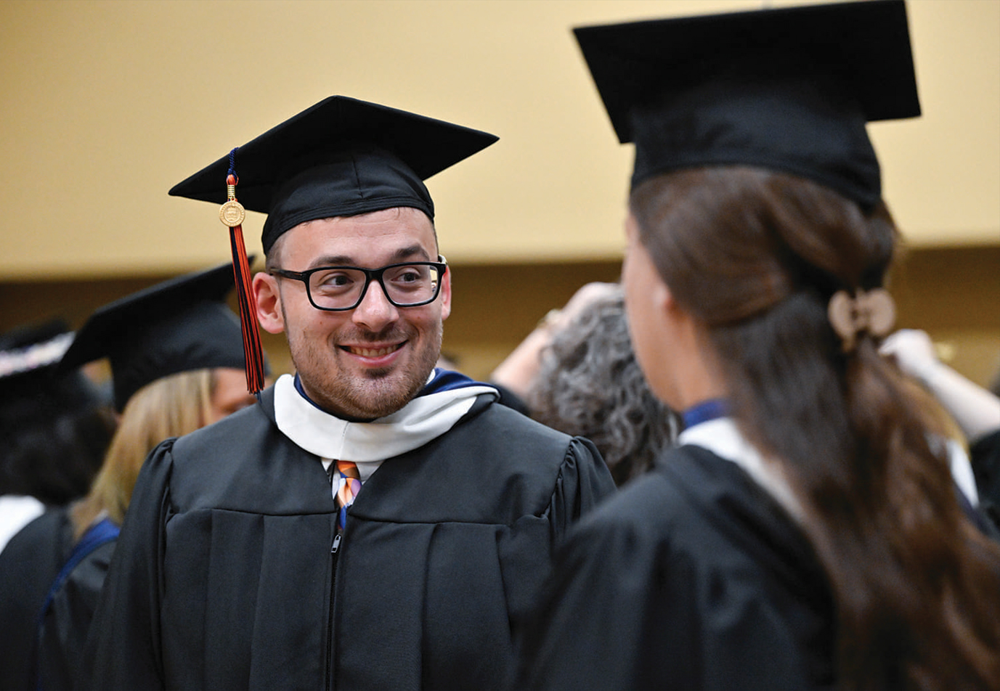
SELF-PACED COURSES
Gilder Lehrman Self-Paced Courses—adapted from graduate courses in our MA program—offer educators flexible, at-home professional development across dozens of wide-ranging topics. Each course is led by a distinguished historian, bringing expert scholarship directly to teachers wherever they are.
Designed to be both affordable and impactful, these courses offer rich historical content, classroom-ready insights, and a certificate that awards 8–15 professional development credits upon completion. They have become a trusted way for teachers to deepen their knowledge, sharpen their practice, and earn PD credit on a schedule that works for them.
- New Courses in FY2026
- American Intellectual History, Part I
- The Civil Rights Movement
- The Fate of the American Constitution, 1787–1937
- The History of Capital, Labor, and Democracy, 1877 to Present
- The History of the US-Mexican Borderlands, 1848–2000
- Law, Constitutions, and Governance, 1700–1990
- The Life and Times of Ida B. Wells
- Twelve Battles That Shaped American History
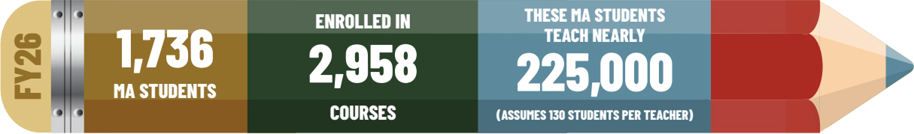
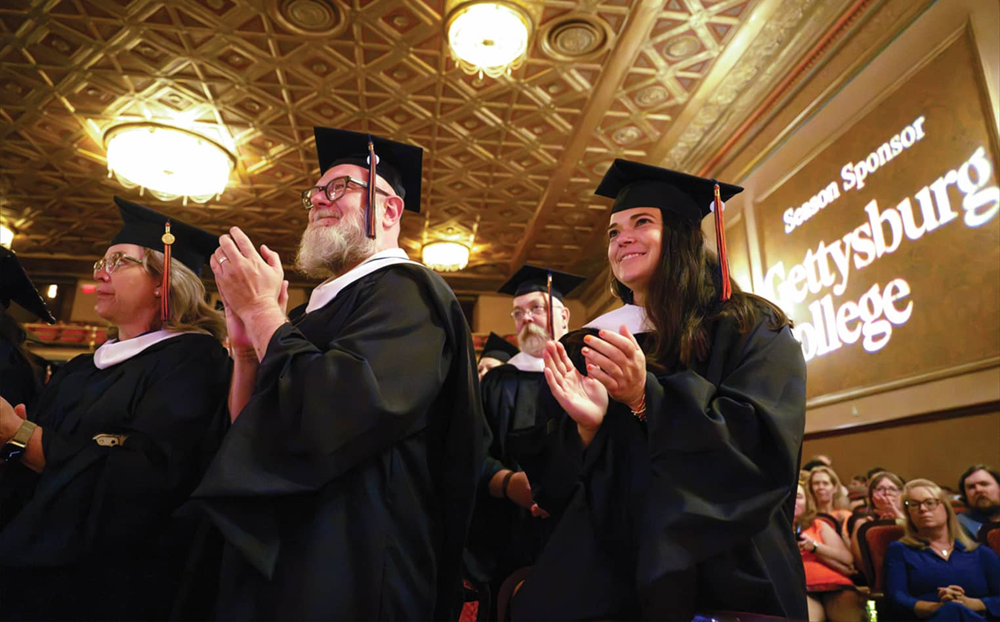
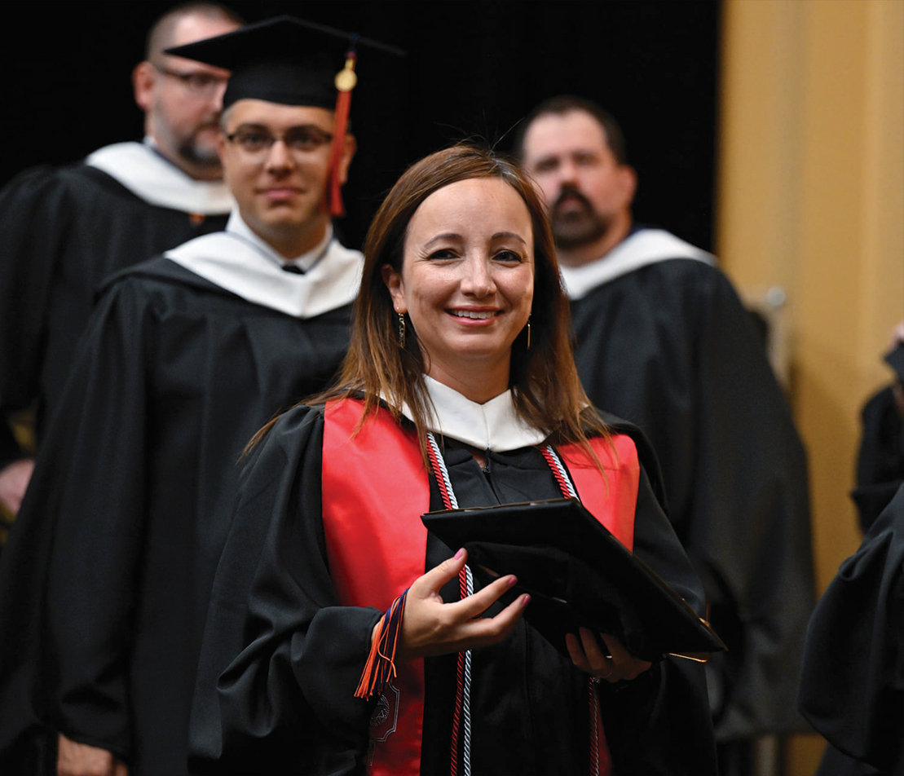
of alumni agreed that
the experience in the MA in
American History made them a better teacher and
that the program had made them more enthusiastic about
teaching
history.
Summer Professional Development
The Gilder Lehrman Institute’s summer 2025 professional development programs reaffirmed our central mission: to support educators with rigorous historical content, classroom-ready resources, and the inspiration that comes from learning together in community.
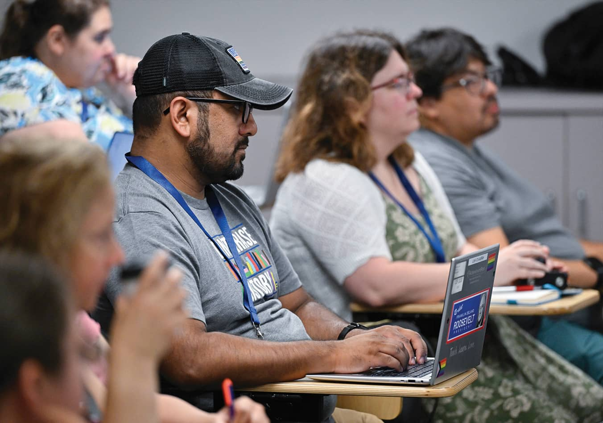
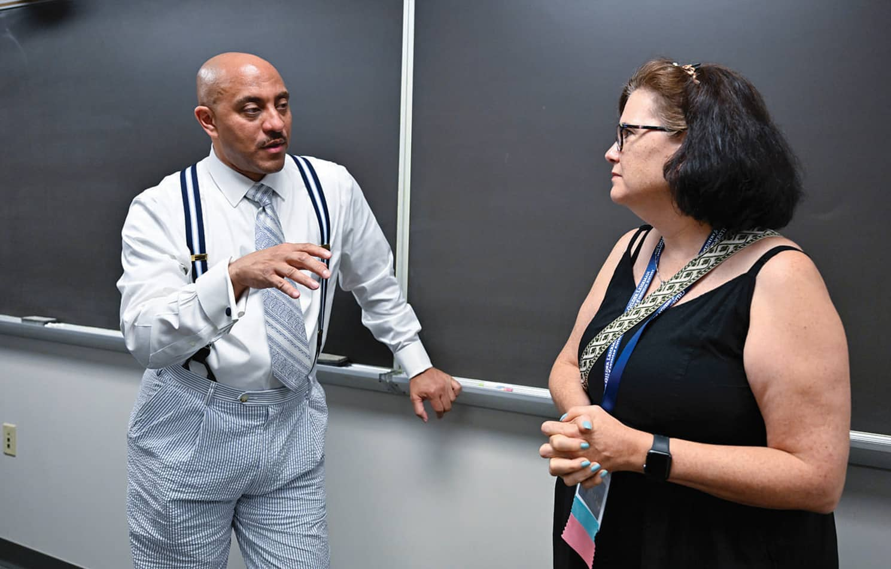
Over the summer, the Institute offered 24 distinct professional development opportunities, from intensive in-person seminars at partner institutions to accessible online programs. In total, we received nearly 4,000 registrations and applications across summer professional development programs offered in 2025.
The summer programming reflected both the breadth and depth of American history.
At Princeton University, the Statesmanship in American History Seminar, created in partnership with the James Madison Program, explored questions of leadership, governance, and civic responsibility.
Summer 2026 teacher PD kicked off in mid-June. Thus far, more than 2,300 teachers registered for online, in-person, and live-streamed seminars, and our popular Teacher Symposium in July.
In Springfield, Illinois, the Reframing Lincoln Seminar at the Abraham Lincoln Presidential Library and Museum examined how myths, memory, and shifting narratives have shaped our understanding of the sixteenth president. The seminar featured Jonathan W. White, then professor of American studies at Christopher Newport University
Teachers also studied the Great Depression, the New Deal, and World War II in a seminar at Marist University. The program included lectures by David Woolner, senior fellow and resident historian of the Roosevelt Institute and professor of history at Marist University. Participants explored the connections between Franklin D. Roosevelt’s New Deal policies and the global transformations of World War II, with special sessions at the FDR Library examining sources and museum exhibitions.
Alongside these thematic seminars, the Institute convened its Teacher Symposium, offering seven in-depth courses led by distinguished scholars and master teachers, and hosted 10 Teacher Seminars Online to ensure broad access for educators. The mix of in-person and online learning opportunities allowed teachers across the country—and beyond—to connect with leading historians and peers, exchange ideas, and return to their classrooms with renewed skills and insights.
By bringing together thousands of educators from diverse schools and communities, the Institute’s summer 2025 programs advanced our ongoing goal: to strengthen history education nationwide by empowering teachers with knowledge, tools, and networks that enrich their practice and inspire their students.
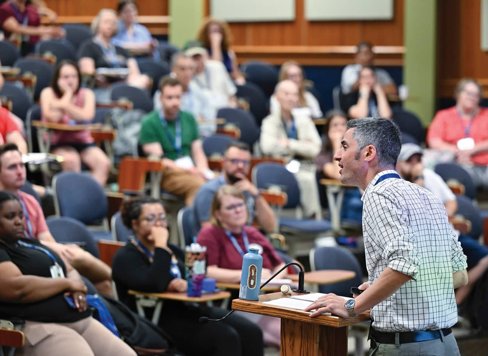
Professor Seth S. Tannenbaum (Manhattanville University) lecturing at the Gilder Lehrman Teacher SymposiumCOURSES OFFERED LAST SUMMER
- In-person seminars
- Statesmanship in American History
- Reframing Lincoln Seminar: Myth, Memory, and Changing Narratives
- Vietnam at 50: Reassessing America’s Lost War
- The Cold War: US Civilian and Military Intelligence and Global Affairs from 1941 to 2011
- Great Depression, New Deal, and World War II
- Teacher Symposium
- World War II
- The American Enlightenment in the Age of Revolutions
- The Civil Rights Movement and American Democracy
- Civil War Memory
- Native American History
- Supreme Court
- Slavery in North America
- Teacher Seminars Online
- The History of Latina and Latino People in the US
- George Washington and His World
- Lives of the Enslaved
- History of Chinese in the US
- Ida B. Wells, Jim Crow, and Women’s Rights
- The History of American Protest
- American Art History
- American Indian History since 1900
- The History of Childhood in America
- Presidential Leadership at Historic Crossroads
Wilderness Education Project
Our partnership with the Wilderness Education Project (WEP) continued
to thrive in FY2026, bringing innovative history programming to
educators serving underserved districts in Virginia and Kentucky.
Workshops for both programs are held in person. Each workshop is
led by an eminent scholar on the topic being studied, and two Gilder
Lehrman master teachers lead pedagogical sessions (one for elementary
and one for secondary educators).
Project EXCEL supports a cohort of approximately 150 K–12 teachers,
librarians, and administrators from underserved districts in western
Virginia. Participants were engaged through self-paced online courses,
four professional workshops held at the Roanoke Education Center
during the school year, and a weeklong summer seminar in Missoula,
Montana, which covered Lewis and Clark and the American West. Each
of these resources was offered as part of a comprehensive curriculum
designed to enhance teaching quality and student achievement.
Project TRAILS includes a cohort of approximately 100 K–12 teachers
from underserved school districts in Kentucky. Held at Midway
University’s Starks Center, the program offered three immersive inperson seminars, each
focused on a pivotal era of American history.
TRAILS also included a Boston summer seminar covering Colonial
America and the American Revolution. By combining scholarly expertise
with classroom practice, TRAILS brought history to life while empowering
educators to inspire their students with new content and methods.
Together, EXCEL and TRAILS advanced the Institute’s commitment
to expanding access to high-quality professional development for
educators working in communities with the greatest need.
By combining scholarly expertise with classroom practice, TRAILS brought history to life while empowering educators.
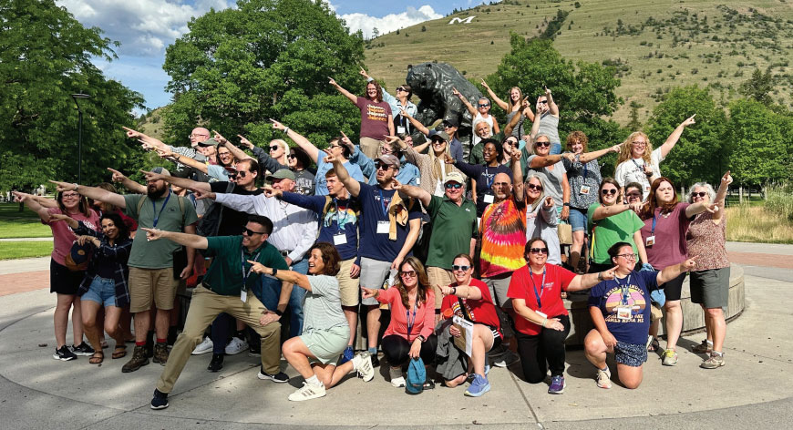
Teachers at WEP professional development workshop in MontanaVeterans Legacy Program
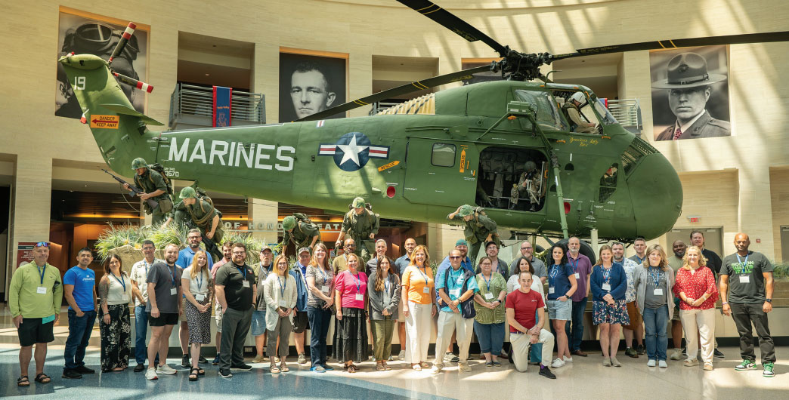
Teachers at VLP Professional Development WorkshopWe continued our partnership with the National Cemetery Administration’s
Veterans Legacy Program by offering free professional development
sessions, lesson plans, and online exhibitions focused on the legacy of
Vietnam Veterans.
The Institute has published a new teaching unit, “Vietnam
Veterans: Legacies of Service, 1965–2012,” featuring scholarship by Prof. William
Sturkey, University of Pennsylvania, and lesson plans created by a
master teacher. The resources explore topics such as the draft, military
service, postwar benefits, and the ongoing contributions of Veterans to
their communities. This curriculum provides students with the tools to
connect national history with local Veterans’ stories.
The professional
development programs surpassed expectations,
reaching more than 338 teachers through spring workshops held in
collaboration with national cemeteries. Additionally, we engaged 69
educators through two four-day summer seminars, with hundreds more
participating online. These sessions combined scholarly lectures, sitebased learning at the
National Museum of the Marine Corps and the LBJ
Presidential Library and Museum, and pedagogy workshops, ensuring
that educators left with both in-depth historical knowledge and practical
classroom strategies.
Furthermore, the Legacies of Service Award student contest
received 139 submissions—nearly triple our goal. This contest honored Veterans and
service members interred in national and state cemeteries. Ten winners
were selected to win $500 for their thoughtful research and creativity,
showcasing projects that ranged from written work to podcasts to
documentaries. Collectively, these initiatives engaged thousands of
teachers and students in preserving and sharing the stories of Vietnam
Veterans, ensuring that future generations will remember their service
and sacrifices.
Gilder Lehrman Collection
The Gilder Lehrman Collection is central to our mission of integrating primary sources into the educational process—it is our greatest asset, enabling us to share unique resources with teachers. Currently, the Collection comprises more than 87,000 items, including letters, diaries, maps, pamphlets, books, newspapers, photographs, and other materials that document American political, social, and economic history from 1493 to the twentieth century.
In 2025, the Collection launched a subscription model which provides subscribers with access to an online archive of 70,000 digitized documents from its holdings.
Users can subscribe monthly or annually to download Collection documents from the archive, which is housed on the Institute’s website. This makes it easy for researchers to access the historical treasures of the Collection from anywhere.
Approximately 200 college and university libraries have subscribed to the Collection’s online archive to make this indispensable resource available to faculty, undergraduates, and graduate students.
Pop-Up Panel Exhibitions
Gilder Lehrman Pop-Up Panel Exhibitions bring historical documents into communities across the country, making history accessible and vivid outside of museum walls. These pop-up exhibitions are available for rent or purchase. They are accompanied by an exhibition guide that provides essential context and helps audiences engage with the material.
Each exhibition features reproductions of primary sources—letters, maps, engravings, broadsides, and photographs—enabling viewers to connect directly with the voices and documents of the past.
By placing historically grounded, visually engaging exhibitions in classrooms, libraries, civic centers, museums, and other venues, the Institute expands access to primary sources and historical thinking beyond traditional academic spaces. These exhibitions serve as powerful tools for sparking curiosity, enhancing curriculum, and drawing diverse audiences into conversations about America’s past.
Schools, libraries, museums, and other community organizations purchased 126 Pop-Up Panel Exhibitions for display in their institutions.
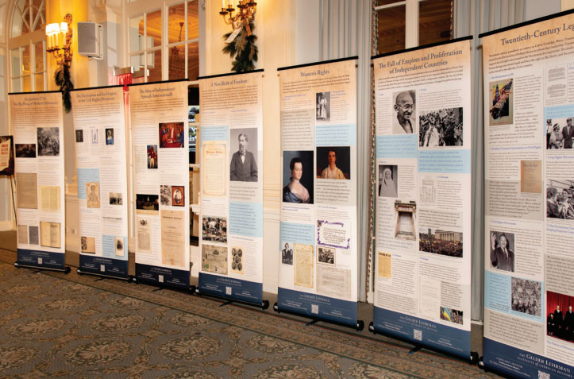
Pop-Up Panel Exhibition: Declaration 1776: the Big Bang of Modern DemocracyGilder Lehrman Pop-Up Panel Exhibitions
- Alexander Hamilton: Immigrant, Patriot, Visionary
- Becoming the United States: Colonial America to Reconstruction
- Declaration 1776: The Big Bang of Modern Democracy
- Frederick Douglass: Advocate for Equality
- Freedom: A History of US
- Immigration: An American Story
- Who Can Vote?: A Brief History of Voting Rights in the United States
- World War I and America
- World War II: Voices of Service
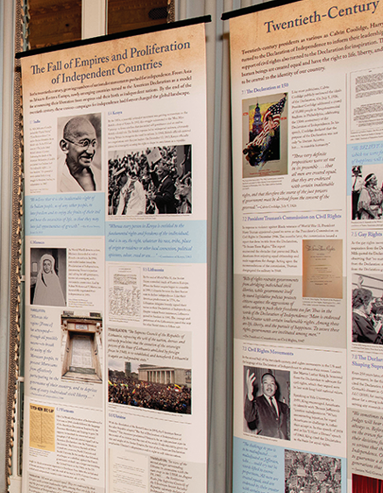
A closer look at Pop-Up Panel Exhibition: Declaration 1776: The Big Bang of Modern DemocracyBook Breaks
Launched in 2020, Book Breaks has grown into a weekly destination for history lovers, educators, and curious learners worldwide. This year, we continued to offer Book Breaks free and open to all, with new live sessions every Sunday at 2 p.m. ET via Zoom. This year, 50 students won a prize for submitting the best question for that week’s historian. They were honored as History Scholar of the Week and won a $50 gift certificate to the Gilder Lehrman Gift Shop.
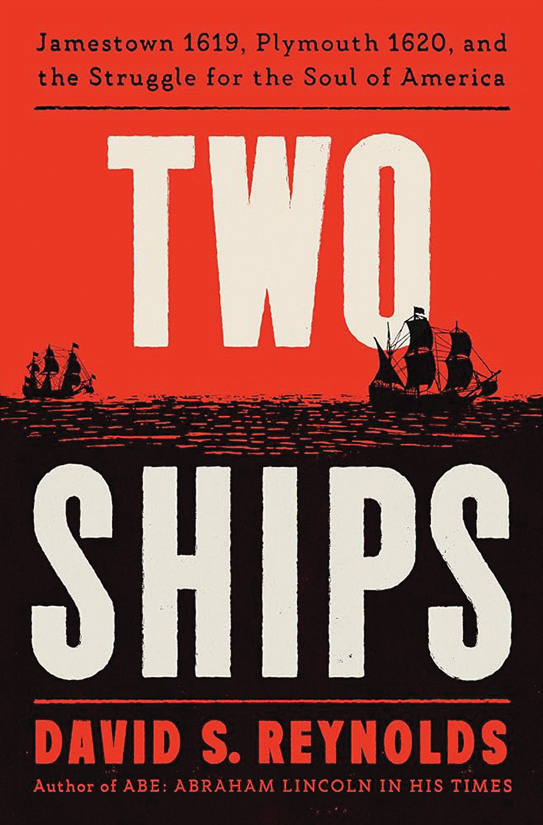
The Book Breaks archive now includes 300 episodes, featuring eminent voices in American history— Akhil Reed Amar, David Blight, Lonnie Bunch, Ken Burns, Ron Chernow, Eric Foner, Doris Kearns Goodwin, Annette Gordon-Reed, Peniel Joseph, Jon Meacham, Brenda Stevenson, Elizabeth Varon, Fareed Zakaria, and many others.
- Ken Burns
- Ron Chernow
-
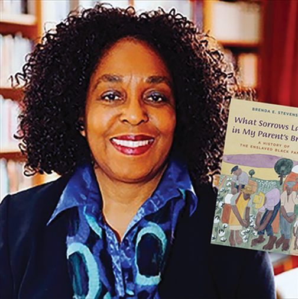
Brenda Stevenson - Fareed Zakaria
-
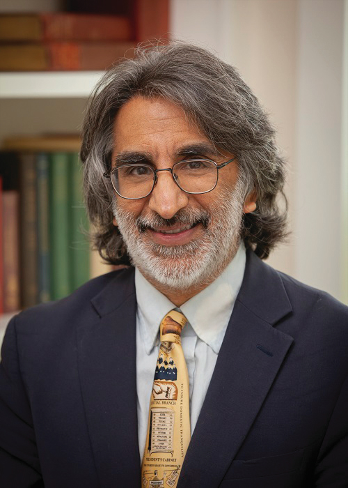
Akhil Reed Amar - Doris Kearns Goodwin
- Annette Gordon-Reed
- Jon Meacham
-
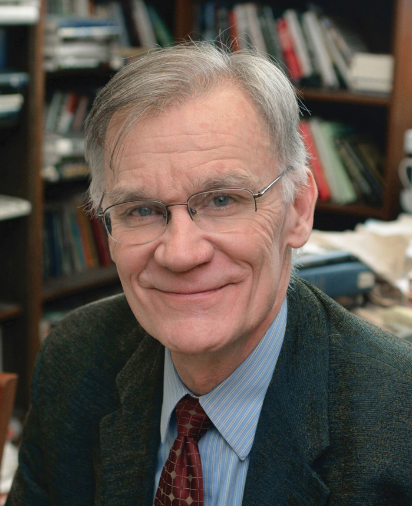
David Blight -
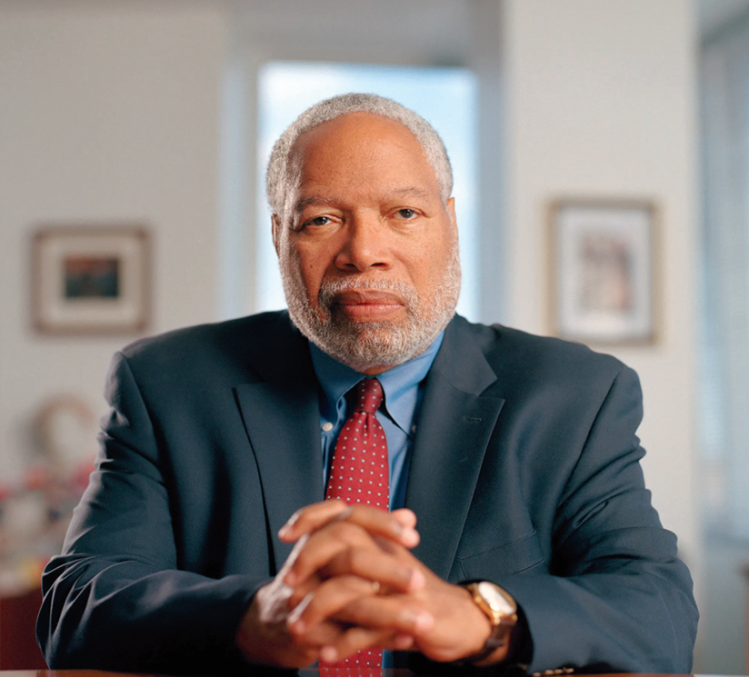
Lonnie Bunch
Inside the Vault
Inside the Vault is a monthly online program that highlights unique primary sources from the Gilder Lehrman Collection. Curators and scholars discuss historical documents from iconic treasures, such as the Declaration of Independence, the Constitution, and the Emancipation Proclamation, to personal letters that reveal the contributions of ordinary Americans.
A total of 83 past episodes of Inside the Vault are archived on the Gilder Lehrman website and can be accessed for free. We launched our short videos on YouTube based on ITV programs: Who Fired the First Shot of the American Revolution? had 1,300 views alone in FY2026.
History Now
History Now, the online journal of the Gilder Lehrman Institute, offers the
latest in historical scholarship to K–12 teachers, students, and general
readers. Each issue focuses on a major topic in American history and
features essays by leading scholars, specifically written for our journal.
Past contributors include prizewinning historians such as David Blight,
Annette Gordon-Reed, Manisha Sinha, and Alan Taylor, among others.
Since 2004,
the Institute has published 79 issues of History Now
featuring more than 400 essays. The following issues were published
between July 1, 2025, and June 30, 2026:
No. 76, “The Natural Resources of the United States in the Shaping of History”
(Fall 2025)
No. 77, “Major Figures in American Economic History”
(Winter 2025)
No. 78, “The Philosophical Origins of the Declaration of Independence”
(Spring 2026)
No. 79, “The Reception of the Declaration of Independence by African Americans”
(Summer 2026)
Book Prizes
For more than 30 years, the Gilder Lehrman Institute has awarded book prizes to recognize outstanding scholarship and promote public engagement with American history. Each year, a panel of distinguished scholars carefully reviews submissions and selects a group of finalists, from which the prize board chooses the winning title.
Winners receive a significant financial award and are honored at an elegant ceremony featuring distinguished speakers. The celebration not only recognizes scholarly excellence but also invites teachers, students, and the wider public to hear the author speak, bringing important historical works into broader conversations.
The Gilder Lehrman Lincoln Prize
The Gilder Lehrman Institute, in partnership with Washington College and George Washington’s Mount Vernon, presents the George Washington Prize. The $50,000 prize recognizes the best new book on George Washington and his times (the Revolutionary and founding eras, ca. 1760–1820) that reaches a broad, non-scholarly public audience.
The 2025 prize was awarded to Tyson Reeder for Serpent in Eden: Foreign Meddling and Partisan Politics in James Madison’s America (Oxford University Press). The winner and finalists were celebrated at an award ceremony on October 8, 2025, at the Union Club in New York City.
The finalists for this year’s prize were
Jane E. Calvert for Penman of the Founding: A Biography of John Dickinson (Oxford University Press)
Francis D. Cogliano for A Revolutionary Friendship: Washington, Jefferson, and the American Republic (Harvard University Press)
Michael D. Hattem for The Memory of ’76: The Revolution in American History (Yale University Press)
Cara Rogers Stevens for Thomas Jefferson and the Fight Against Slavery (University Press of Kansas)

THE GILDER LEHRMAN MILITARY HISTORY PRIZE
The $50,000 Gilder Lehrman Military History Prize recognizes the best book of the year on American military history in English, distinguished by its scholarship, its contribution to the literature, and its appeal to the general reading public.
This year, the prize was awarded to Evan Mawdsley for r Supremacy at Sea: Task Force 58 and the Central Pacific Victory (Yale University Press). The winner and finalists were celebrated at an award ceremony at the Yale Club of New York on December 2, 2025.
The jury selected two finalists from ninety-four nominations
Tim Cook for The Good Allies: How Canada and the United States Fought Together to Defeat Fascism during the Second World War (Allen Lane)
Vaughn Scribner for Under Alien Skies: Environment, Suffering, and the Defeat of the British Military in Revolutionary America (The University of North Carolina Press)
THE FREDERICK DOUGLASS BOOK PRIZE
The $25,000 Frederick Douglass Book Prize is awarded in partnership with the Gilder Lehrman Center for the Study of Slavery, Resistance, and Abolition at Yale University. It is given to an outstanding non-fiction book in English that focuses on slavery, resistance, or abolition. All geographical areas and time periods are eligible.
The winner of the 2025 prize is Justene Hill Edwards for Savings and Trust: The Rise and Betrayal of the Freedman’s Bank (W. W. Norton and Company). She and the three finalists for the prize were celebrated at an award ceremony on February 12, 2026, at Trinity Church.
The finalists for the 2025 prize were
Keidrick Roy for American Dark Age: Racial Feudalism and the Rise of Black Liberalism (Princeton University Press)
Makhroufi Ousmane Traoré for Slavery, Resistance, and Identity in Early Modern West Africa: The Ethnic-State of Gajaaga(Cambridge University Press)
Gloria McCahon Whiting for Belonging: An Intimate History of Slavery and Family in Early New England (University of Pennsylvania Press)
THE GILDER LEHRMAN LINCOLN PRIZE
The $50,000 Gilder Lehrman Lincoln Prize is awarded annually for the best scholarly work with a broad public appeal on Abraham Lincoln, the American Civil War soldier, or the American Civil War era.
The 2026 laureate is Richard Carwardine for his book Righteous Strife: How Warring Religious Nationalists Forged Lincoln’s Union (Knopf). The laureate and finalists were celebrated at an award ceremony on April 16, 2026, at the Yale Club of New York.
The six finalists that the jury selected from ninety nominations were
Douglas R. Egerton for A Man on Fire: The Worlds of Thomas Wentworth Higginson (Oxford University Press)
Judith Giesberg for Last Seen: The Enduring Search by Formerly Enslaved People to Find Their Lost Families (Simon & Schuster)
Robert H. Gudmestad for The Devil’s Own Purgatory: The United States Mississippi River Squadron in the Civil War (Louisiana State University Press)
Jonathan S. Jones for Opium Slavery: Civil War Veterans and America’s First Opioid Crisis (University of North Carolina Press) Anne E. Marshall for Cassius Marcellus Clay: The Life of an Antislavery
Slaveholder and the Paradox of American Reform (University of North Carolina Press)
Michael Vorenberg for Lincoln’s Peace: The Struggle to End the American Civil War (Alfred A. Knopf)
Fellowships
The Gilder Lehman Institute’s fellowship programs provide undergraduates, PhD students, and scholars with funding and access to archives supporting research in American history. These fellowships significantly impact historical scholarship by enabling groundbreaking studies, fostering academic collaboration, and enriching history teaching at all levels.
COLLEGE FELLOWSHIPS IN AMERICAN HISTORY
The Institute offers short-term research fellowships of $3,000 each to undergraduate students majoring or minoring in history, American studies, Africana studies, political science, or related fields. This program, launched in 2022, allows young historians to pursue research at the Gilder Lehrman Collection and other archives in New York City.
GILDER LEHRMAN COLLEGE FELLOWS
Jack Brilliant | Vassar College | “The Guardian Angels of World War II: The Human Stories Behind American Tank Battalions”
Colette Browning | University of California, Los Angeles | “Born into Bondage: Enslaved Families in Antebellum America”
Nathalia Dominguez | Brown University | “Revisiting the Nondelegation Doctrine of the US Constitution”
Esayah Edghill | Howard University | “Humans, Always: Reimagining the Narrative of Slave Resistance” Recipient of the College Fellowship in Slavery and Abolition Studies
Tayton Fuja | Brigham Young University | “Teaching a Republic: Politics and Ideals in the Educational Proposals and Debates of the Early Republic”
Valentin le Blanc | Rice University | “A Looming Shadow: The Responses of Lincoln and the Confederacy to French Influence on the Civil War Recipient of the inaugural Lewis E. Lehrman Fellowship for the Study of the Life and Achievement of Abraham Lincoln
Iago Macknik-Conde | Macaulay Honors College at Hunter College, City University of New York | “Bernardo de Gálvez, Hispanic Hero of the American Revolution”
Djino Kavula Nzau | University of Southern Maine | “Imperial Power and Adaptation: How British Authority Preserved Itself Amid Colonial Resistance in the Eighteenth-Century Atlantic World” Recipient of the College Fellowship in honor of Professor Alan Heimert for a project focusing on seventeenth or eighteenth-century American history
GILDER LEHRMAN SCHOLARLY FELLOWS
Heather N. Jahrling | PhD Candidate in History, Princeton University | “Beyond the Bullseye: Concrete Civil Defense in Cold War America” Recipient of the Scholarly Fellowship in Cold War Studies
Angelina Lincoln | PhD Candidate in History, University of Maryland, College Park | “African American Children, Their Caretakers, and the State in and around the Civil War’s Refugee Camps”
Reagan Ricker | Columbia University | “(Legally) Open Waters: Free Black Sailors, the Negro Seamen Acts, and an International Crisis of Citizenship”
Jennah Simpson | Trinity College | “A Unique Tradition: Letters Exchanged Between Women in the Early American Republic”
SCHOLARLY FELLOWSHIP PROGRAM
The Institute provides short-term research fellowships of $3,000 each to doctoral candidates, college and university faculty at every rank, and independent scholars working in American history. The Institute has awarded 723 fellowships since 1994.
GILDER LEHRMAN SCHOLARLY FELLOWS
Edward Blum | Professor of History, San Diego State University | “A Republic that Counts: How Numbers Created Americans and How Americans Created Numbers”
Hanul Christian Choe | PhD Candidate in History, University of Georgia | “US Governance in the Panama Canal Zone, 1914–79”
Hannah Farber | Associate Professor of History, Columbia University | “The American Lawsuit: Civil Litigation from the Revolution to the Age of Jackson”
William Gillispie PhD Candidate in History, Rice University | “Black Americans in the Wilsonian Moment: African American Internationalization between World War One and the Italo-Ethiopian War, 1917–1936”
Isaac J. Guzmán | PhD Candidate in History, Rutgers University–New Brunswick | “The Slave Driver and Power: Captivity, Force, and Violence in South Carolina” Recipient of the Scholarly Fellowship in Slavery and Abolition Studies
Olivia Haynes | PhD Candidate, W. E. B. Du Bois Department of AfroAmerican Studies, University of Massachusetts Amherst | “Unseen Hands: Black Midwives, Care, and Belonging in the Early American North” Recipient of the John Winthrop Scholarly Fellowship with a Focus on Colonial History
Kieran J. O’Keefe | Assistant Professor of History, Lyon College | “Horatio Gates: Empire, Revolution, and the Creation of the United States”
Carolyn Zola | Lecturer, Department of History and Global Studies, California State University–East Bay | “Public Women: Urban Provisioners in Nineteenth-Century America”
Scholarly Advisory Board
In 2026, historians on the Gilder Lehrman Institute’s 480-member Scholarly Advisory Board were recognized for the following contributions to American history scholarship, to name just a few:
Rick Atkinson | author and historian, won the 2026 American Battlefield Trust Prize for History for The Fate of the Day: The War for America, Fort Ticonderoga to Charleston, 1777–1780 (Crown/Penguin Random House)
Richard Carwardine | Emeritus Rhodes Professor of American History at Corpus Christi College, University of Oxford, received the 2026 Gilder Lehrman Lincoln Prize for Righteous Strife: How Warring Religious Nationalists Forged Lincoln’s Union (Knopf)
Henry Louis Gates, Jr. | Alphonse Fletcher University Professor and Director of the Hutchins Center for African & African American Research at Harvard University, received the 2026 Thomas Jefferson Foundation Medal in Citizen Leadership awarded by the University of Virginia
Beth Lew-Williams | Professor of History and Director of the Program in Asian American Studies at Princeton University, received the 2026 Bancroft Prize in American History and Diplomacy and the 2026 Merle Curti Social History Award for John Doe Chinaman: A Forgotten History of Chinese Life Under American Racial Law (Harvard University Press)
Natalia Molina | Distinguished Professor of American Studies and Ethnicity at the University of Southern California, received a 2026 Guggenheim Fellowship in US History
Andrew Preston | W. L. Lyons Brown Jr. Jefferson Scholars Foundation Distinguished Professor in Diplomacy and Statecraft at the University of Virginia, received the 2026 Distinguished Book Award from the Society for Military History and the 2026 Society for History in the Federal Government Book Prize for Total Defense: The New Deal and the Invention of National Security (Harvard University Press)
John Wood Sweet | Professor of History at the University of North Carolina at Chapel Hill, received a 2026 Guggenheim Fellowship in US History
Michael Vorenberg | Professor of History at Brown University, received the 2026 John L. Nau III Book Prize in American Civil War Era History and the 2026 Tom Watson Brown Book Award for Lincoln’s Peace: The Struggle to End the American Civil War (Knopf).
Teacher Advisory Counci
The Gilder Lehrman Teacher Advisory Council advises the Institute on programs and resources that best support American history in K–12 classrooms. The 32 members—many of whom are National and State History Teachers of the Year winners—help ensure our work is grounded in real classroom practice by bringing diverse perspectives from across grade levels, regions, and school contexts, and by elevating the voices of educators who know firsthand what students and teachers need to succeed.
Board of Trustees
OFFICERS
Co-Chairmen
Richard Gilder (1932–2020)
Lewis E. Lehrman (1938–2026)
Vice Chairs
Robert H. Niehaus
Shaiza Rizavi
Treasurer
Joseph DiMenna
MEMBERS
Edward L. Ayers
S. Andrew Banks
James G. Basker
(President and CEO)
John D. Britton, II
Ken Burns
Alysha Butler
Mary Caslin Ross
Kenneth Chenault
Robert C. Daum
Dixie De Luca
Patrick Duff
Grady Durham
Yaroslav Faryshchenko
Regina Gannon
Henry Louis Gates, Jr.
Bruce Gordon
Annette Gordon-Reed
Allen Guelzo
Lara Heimert
Elizabeth Herbst-Brady
Phillip A. Jackson
Lt. General Michelle Johnson
Alan Jones
Daniel P. Jordan (1938–2024),
Life Trustee
Gladstone N. Jones, III
Thomas D. Lehrman
Stephen F. Mandel, Jr.
Michael McCormick
David McCullough (1933–2022),
Life Trustee
John L. Nau, III
Linda Pace
Russell P. Pennoyer
William J. Poorvu
Julian Robertson (1932–2022),
Life Trustee
Valerie Rockefeller
Mark Shafir
Nancy Simpkins
Dorothy (Debbie) Stapleton
Luz Towns-Miranda
Richard Webster
President’s Council
MEMBERS
Joseph Amato
Celeste Archer
John Avlon
Roger Barbee
M. Barry Bausano
Amanda Bellows
Louccas Bou Jaoude
Julian Braxton
Cathy Callender
Dev Chodry
Kevin Cline
Joseph Coffey
Andrew Coles
Kim Collins
Sergio de Alba
Katie (Trong) Drucker
Richard Ekman
Susan Fales-Hill
Andrew Fentress
Mercedes Franklin
Amanda Geduld
Elisabeth Gray
Lesley Herrmann
Scott Higgins
Patricia Johnson
Amanda Jones
Christine Kang
Allison Kraft
Sidney Lapidus
Rosanne Lichatin
Nnenna Lynch
Christine Martin
Nate McAlister
Brian McDonald
Ariel Merrick
Sean Mintz
Tobi Molko
Griff Norquist
Molly O’Meara Sheehan
Alvin Patrick
Arielle Patrick
Kelly Purcell
Maggie Rapp
Keisha Rembert
Alexander Robertson
Susan Saidenberg
Ryan Scheb
Abigail Seldin
Todd Solmson
Graham Spence
Sheila Stone
Josh Struzziery
Claire Svetlik
Peter Tirschwell
Larry Walker
Joe Welch
Ben Williams
Kenny Wong
Sara Ziemnik
Donors
5000 Broadway Productions, Inc.
A. P. Kirby, Jr. Foundation
A&E Television Networks
Abbett Family Foundation
Achelis and Bodman Foundation
Acorn Hill Foundation, Inc.
Rebecca and Alberto Acosta
Kate Adams
Sharon Alter
Concepcion Alvar
Lisa and Joseph Amato
Robert Anderson
Dee Andrews
Anonymous
Yasmin Aquino
Arete Foundation
Robert Arnove
Mary Ann Ashcraft
Michael Bacior
Harvey Bagley
Katherine Bailey
Nan Bambara
Tim and Michele Barakett Foundation
Kenneth Bartels
Richard Bartlett and Kerri Martin
Judith Basker
Robert Edward Basker
John and Dalene Beaton
Nancy Beckley
Cathie Behrend
David Behrend
Lorraine Bell
Amanda Brickell Bellows and Marcus Bellows
Bob Bender
Carol Berkin
Rebekah Berkowitz
Lewis Bernard
Zoublia Bicane
Michael Billet
Billings Studio Theatre
Michael and Eryn Bingle
Constance Birkelund
Michael Birkner
Marta Black
David Blight
Bloomberg Philanthropies
V. Blue
Michael Blumstein
David Bohn
Talmage Boston
Louccas Bou Jaoude
Barbara Bowen
Elizabeth Boylan
John and Jasanna Britton
Sam Britton
Paul Brown and Laura Moore Brown
Brown Brothers Harriman & Co.
Estate of Peter Buck
Michael and Ann Bunyaner
Wolf Burchard
Barbara Burgan
Judith Byrd
Diane and Michael Camerota
William Campbell
Alice Cannon
Sean Carmody
Lisa and Richard Cashin
Ceci Chan
Charina Foundation, Inc.
Charles Hayden Foundation
Bonnie and James Chemel
Kenneth and Kathryn Chenault
Ron Chernow
Lois Chiles Foundation
Suzanne Clary
Catherine Clinton
Monica Coccia
James Coe
Edward and Betsy Cohen
Kimberly Collins
Consolidated Edison, Inc.
Kevin Cooper
W. Don and Saundra Cornwell
Lorraine Cortes-Vazquez
Joseph Costello
Elisabeth Creech
Alex and Kenny Creed
Devon Cross
Crosswols Foundation
Marie Curry
Anthony and Lorraine Czarnecki
Sabina Daley Deaton and Adam Deaton
David Dangremond
Susan Danilow
Julie and Robert Daum
Jack David Family Foundation
Caitlin Davidson
George Davidson
Ashley Davis
Michael Davis
Dixie and David De Luca
Emme and Jonathan Deland
Pete Delay
Mary Dell-Smith
Valarie and Mark DeVecchis
Nicola Dihrberg-Bracken
Joseph DiMenna
Joe Donnelly
Dorothy Tapper Goldman Foundation
Alice Duff
John Duffell
John Dupree
Jon Durbin
Grady & Lori Durham
Kenneth B. Ebert
Ed Uihlein Family Foundation
Cheryl and Blair Effron
Thomas and Cashie Egan Foundation
Richard and Caroline Ekman
The Elbrun and Peter Kimmelman Family Foundation
Lisbeth Eng
Episcopal Church Foundation
Erika Johnson
John Exline
Extraordinary LLC
F. M. Kirby Foundation
Alex and Patricia Farman-Farmaian
Yaroslav Faybishenko
Barbarann Feeney
Melanie Feldstein
Julianne Fernandez
Gregory Fiasconaro
Gail Finney
Randy Fishfader
Donald Fitzgibbons
Steven Forman
Warren Frazier
Fred Maytag Family Foundation
David & Beth Frey
Oda Friedheim
Hope Friedland
BK Fulton
Donald Gallagher
Joseph Garrera
Amy Gaudrault
Craig Gemmell
Lisa Genova
Mara Georgi
James Gerber
Archibald and Linda Gillies
Brent Glass
David Goldsmith
Elizabeth Goodenough
Paul Goodof
John R. and Kienzl Dauphinot Gordon
Rachel Gordon
The Gordon and Tibbs Family Fund
Annette Gordon-Reed
James Gosselink
Carol Ostrow and Michael Graff
Elysa Greenblatt
Richard Greene
Lisa Greenwald
Teresa Grosch
Caroline and Daniel Grossman
Alycia Guichard
Samuel L. Guillory
Marc Haas Foundation
Habe Foundation
Michelena Hallie
Bryan Haltermann
Robert and Jane Harrison Foundation
Harrison Family Fund, Inc.
Cary Smith Hart
Greg and Christa Hartch
Ellen Hecht
Lara Heimert
The Helmerich Trust
Herbst Family Foundation
Susan Hermanson
Lesley and Richard Herrmann
Charles Hess
Marlene Hess
The Hickory Foundation
Charles Higgins
Scott Higgins
Ursula Higgins
Robert Hines
Dylan Hixon
Cecilia Hoang
Hobson/Lucas Family Foundation
Barbara Hochman
Mandel Holland
Jonathan Holloway and Aisling Colón
Kerri Holloway
Harold Holzer
Howard P. Calhoun Family Foundation
Antoinette Basker Howell
Alison Hutchinson
William and Cathy Ingram
Gregory Islan
Jack Miller Center for Teaching America's Founding Principles and History
Carolyn Jaffe
Jessie and Benoit Jamar
Amabel and Tony James
Debra A. James
Satinder Jawanda
Jerry and Kathrine Speyer Family Foundation
David Johnson
E. Thomas Johnson Jr
Patricia Redd Johnson
Carol Johnston
The Robert F. and Lynn D. Johnston Family Foundation
Steven Joseph
Ivan Jurin
Miriam Kahn
Rick Kardon
The Karen Legotte Foundation
Mitchell Karp and Barry Katz
Robert and Milly Kayyem
Kathleen Kean
Suzanne and Jonathan Kelly
Emily Klicer
Natalie Kim
Jefferson W. Kirby
S. Dillard Kirby
Stephanie Kirsh
Koch Family Foundation
Gerry Kohler
Lisa Krassner
Steven Krause
Kathryn Krauss
Paul Bloch and Jane Krauss
Karen and Liam Krehbiel
Andrea Lamberti
Joshua Landon
Sidney and Ruth Lapidus
Donald LaPlante
Stephen and Wendy Lash
Leslie Lawner
Robert and Linda Lawrence
Elizabeth Lee-Rey
Peter Lehrman
Mara and Thomas Lehrman
The Leibowitz and Greenway Family Charitable Foundation
Caryl Levin
William M. Lewis, Jr., and Carol Sutton Lewis
LFH Foundation Family Trust
Rosanne Lichatin
Liebman Family Charitable Fund
Eric Lindquist
Lingua Franca
Eva Lund
John and Cathy Mack
Michael Maibach
John Makinson and Nandana Sen
Marc Malkin
The Malkin Fund
Fred Manaster
Steve and Sue Mandel
Margaret Mellon Hitchcock Foundation
Robert and Mary S. Marks
Christine Martin
Lise Martina
Tiffany Martinez
Marva Smalls
Dale Cochran
Bennett Matelson
Maxwell/Hanrahan Foundation
Edward G. and Jeanne G. McAnaney
McCormick Family Foundation
Robert R. McCormick Foundation
Stephanie McCurry
Brian and Mee Hyun McDonald
James and Laurie McGuire
Bryant McInnis
Lesley McIntire
Thomas McNamara
James L. and Rosalie C. Means
Richard Menaker and Faith Ritchie
Elise Kelsey Merrow
Harriett Michael
Mark Miller
Randall Miller
Mintz Giving Fund
Henry Molina
Tobi Molko
Jean Montgomery
S. Maquita Moody
Richard and Penny Morales
Jennifer Morgan
The Motley Family Charitable Fund
Joe Murphy
Ruthard Murphy
Susan Nelson
Doreen Neuhoff Uhas-Sauer
New York Life Foundation at New York Life Insurance Company
Bob and Kate Niehaus
Kathleen Niles
Griff and Elizabeth Norquist
Nicole Nunag
John O'Brien
Sheehan O'Meara Family Fund
Virginia Ober
Morris and Nancy Offit
Andrew and Caroline Oliver
Susan Oppenheim
Linda Pace
Helen Papoulias
Paramount Entertainment
Rosanne Patchen
Alvin Patrick
Heidi Patterson
Robin Payes
Frank J. Pedone
Russell and Helen Pennoyer
Edwin Perry
Steven Pfeiffer
Virginia Pfeiffer
Lincoln and Jennifer Phillippi
Todd Pietri and Nancy Turbidy Pietri
Daniel Pinkel and Donna Albertson
Michael Piscal
PLM Foundation
Portia Poindexter
The Previdi Family Fund
David Propsom
Jeanette Providence
Thomas P. Putnam
Ernest Pysher
Queen Sofia Spanish Institute
Barton Quillen
Rachor Education Foundation, Ltd.
John Rex-Waller
Jessica Richard
Shaiza Rizavi and Jon Friedland
Peter Rizzo
Delice Roberson
Andrew Robertson
Gayle Robinson
Valerie Rockefeller and Jeffery Shames
Ajena Rogers
Mary Caslin Ross and Alex Ross
Sylvester Rowe
Adam Rowell
Lani Russell Lewter
Allan Ruter
S. Andrew Banks and Dame Pamela Gordon Banks
Julie and Nick Sakellariadis
Sharon Salzberg
San Diego Foundation
Michael R. and Mary Anne Basker Sandoval
Pam and Scott Schafler
William Schauman
The Schlosstein-Hartley Family Foundation
Gil Schorr
Lisa and Bob Schultz
Steven Schwartz
Cecil Scott
Gary Scott
Jayla Scott
Reynolds Scott-Childress
Christopher Seck and Yuna Yang
Charles Shaffer and Karen Christensen Shaffer
Mark Shafir and Hillary Schafer
Michael Shinagel
Short Family Foundation
D. Ellen Shuman and Doug Rae
Sidney Stern Memorial Trust
Barbara and Barry Silberman
Silicon Valley Community Foundation
Simon & Schuster
Hailey Simone
Simpson Thacher & Bartlett LLP
Alex Sinelnikov
Mary and Alok Singh
Todd and Adriana Solmson
Jean and William Soman
Stephanie Sosnow
Graham and Marieke Spence
Luther and Kathryn Spohn
Mrs. Dorothy and Ambassador Craig Stapleton
Linda Steinmann
Richard Stengel
Adam Stevens
Sheila M. Stone
Wendy Strothman
Sandra Surface
Kirk Swenson
Tara Syme
Stephen Szymanski
Monica Tavares
Shirlee Tevet
Fenella Theis and Edward Christie-Miller
Hakim Thompson
Peter and Gretchen Tirschwell
James S. & Merryl H. Tisch
Stephanie Toothman
Trinity Church
Tyran Triplett
Frank Trotta and Susan Piening
Douglas and Vera Twigg
Melissa Vail and Norman Selby
Angela Vallot and James G. Basker
Anne Vallot-Basker
The Van der Weijden Family Fund
Lee and Cynthia Vance
Ann and Curtis Viebranz
Chip Wade
Susan Walden
Lucy R. Waletzky
Larry Walker
William Walsh
Helen and Will Webster Foundation
Edward Welburn
Theodore Wells
Russell Wheeler
Inna and Arthur White
Whiting Foundation
Colleen Wilford
Arsenia Williams
Barbara Williams
Colin Williams
Glenn Williams
Owen Williams
The Willing & O'Donnell Charitable Giving Fund
Wendell Willkie
Cristiana Wilson
Jordan Cohen and Leatrice Wolf
Rebecca and Alberto Acosta
Carole Woods
William Wright
Alfred Wurglitz
Tony and Nanar Yoseloff
Dale and James Young
Barbara and David Zalaznick Foundation
Barak Zemer
Robert Zilg
Jack and Kathryn Zoeller
Martin Zottola
Great Teaching Shapes Great Citizens
Student Advisory Council members view documents from the Gilder Lehrman Collection.A powerful lesson can change how a young person sees the world. Your gift equips teachers with high-quality resources and brings primary sources to life for students nationwide—building historical knowledge and the habits of informed citizenship.
YOUR GIFT FUELS: Teacher professional development, student scholarships and contests, the Gilder Lehrman Collection’s digital resources, and classroom materials that make history vivid and accessible.
The Gilder Lehrman Institute of American History is a 501(c)(3) nonprofit. All donations are tax-deductible to the extent allowed by law.
GIVE TODAY: gilderlehrman.org | 501(c)(3) tax-deductible checks: 49 West 45th St., 2nd Fl., New York, NY 10036 stock/wire: development@gilderlehrman.org
MORE WAYS TO SUPPORT THE INSTITUTE: Recurring
gifts, employer matches, tributes, DAFs, IRA QCDs, and planned gifts.
contact:
development@gilderlehrman.org
We are deeply grateful to every donor who helped make this year’s achievements possible. Whether you gave $10 or $10,000, your support ensures that history education remains accessible, accurate, and inspiring for learners everywhere. Thank you for being part of the Gilder Lehrman community and for believing that history—and the students who study it—matters.
49 West 45th Street, Second Floor • New York, NY 10036
646-366-9666 • gilderlehrman.org